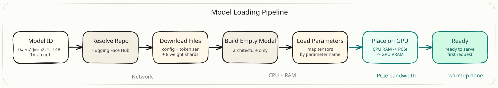
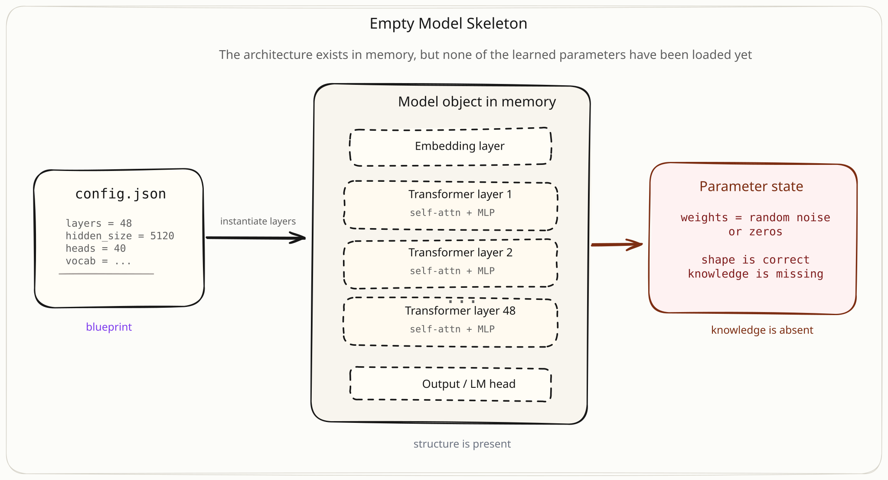
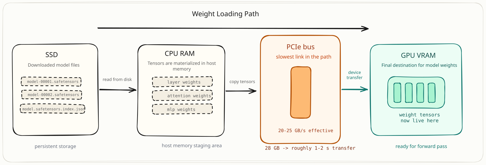
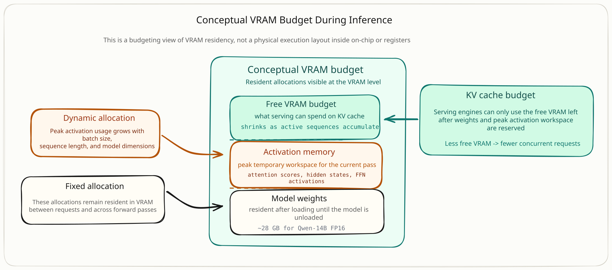
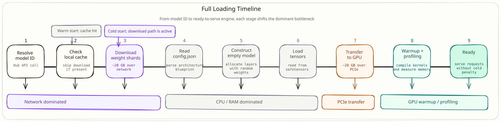

The Hidden Pipeline Behind LLM Loading
Introduction
If you have ever loaded a large language model, you have probably written something like this:
from transformers import AutoModelForCausalLM
model = AutoModelForCausalLM.from_pretrained("Qwen/Qwen2.5-14B-Instruct")You run it, and then you wait. Sometimes for thirty seconds. Sometimes for several minutes. Eventually the function returns, and you have a model object sitting in memory, ready to generate text.
But what actually happened during that wait?
From the outside, from_pretrained looks like a single operation. You pass in a model name, and you get back a model. It feels like opening a file. But behind that one line, the system is doing an enormous amount of work: resolving a name into a remote repository, downloading tens of gigabytes of data, constructing an empty neural network, filling it with billions of parameters, and physically moving those parameters onto a GPU.
Each of those steps has its own constraints, its own bottlenecks, and its own implications for how fast your model starts up and how much memory it ends up consuming.

Once the model is loaded, the next challenge is actually serving it: handling prompts, generating tokens, and managing concurrent users on the GPU. That is the subject of the next post. But before any of that can happen, the model has to get loaded in the first place, and that process is far more involved than it looks.
We will trace the entire loading pipeline, stage by stage, and by the end you should have a clear mental picture of everything that happens before the model is ready to serve its first token.
What Is a Model ID, Really?
Let's start with the string itself.
This looks like a path, and in a sense it is. The first part, Qwen, is the organization. The second part, Qwen2.5-14B-Instruct, is the model name. Together they form an address that points to a repository on the Hugging Face Hub.
When you pass this string to from_pretrained, the very first thing that happens is a network call. The library contacts the Hugging Face Hub API, resolves the model ID, and retrieves the list of files in that repository.
So what is actually inside this repository? If you browse it on the Hub, you will find something like this:
Contents of a typical model repository
There are three categories of files here, and each one plays a different role in the loading process.
The config.json is the blueprint. It describes everything about the model's architecture: how many layers it has, the hidden dimension size, the number of attention heads, the vocabulary size. It contains no weights at all.
The tokenizer files define how text is converted to and from the numerical token IDs that the model understands. Without these, you could load the model but would have no way to feed it text or read its output.
The safetensors files are the actual weight files. These contain the billions of numerical parameters that make the model what it is. For Qwen-14B, these files total roughly 28 gigabytes.
Think of it this way. The model ID is an address. The repository is the house at that address. The config.json is the floor plan. It tells you exactly how the house is laid out without containing any furniture. The weight files are the furniture itself. And the tokenizer files are the instruction manual for how people communicate with whatever lives inside the house.
With the repository resolved, the loading process knows what it needs to download. But before anything moves into memory, the files need to exist locally.
Downloading the Weights
The first time you call from_pretrained for a given model, the library needs to download the files from the Hub. If you have loaded the same model before, it checks a local cache first and skips the download entirely. But on a fresh machine, which is exactly the situation you face when spinning up a new GPU instance, everything must come over the network.
For Qwen-14B in FP16, that means downloading approximately 28 gigabytes of weight data, plus a few small config and tokenizer files.
You might wonder why the weights are split across eight files instead of stored as a single file. The answer is practical. A single 28 GB file is fragile to download, hard to resume if the connection drops, and slow to process. By sharding the weights across multiple files, each one can be downloaded and verified independently. Some systems can even download shards in parallel.
There is also an index file that acts as a map.
This file tells the loader which parameters live in which shard. When the framework needs to load the attention weights from layer 12, it can look up the index and read directly from the right file instead of scanning through all eight.
Why Safetensors?
Older models often used Python's pickle format to store weights. This worked, but it had a serious problem: loading a pickle file means executing arbitrary Python code. A malicious model file could run anything on your system.
Safetensors was created to fix this. It is a simple, flat binary format. Each file is essentially a header describing the tensor names, shapes, and data types, followed by the raw numerical data laid out contiguously in memory.
This simplicity has a performance benefit too. Because the data is laid out contiguously, the file can be memory-mapped. Memory mapping means the operating system can make the file's contents accessible as if they were already in RAM, without actually reading the entire file upfront. The framework can then read individual tensors directly from disk on demand, which matters a lot when you are working with files that are several gigabytes each.
The Local Cache
After the download completes, all the files land in a local cache directory, typically under ~/.cache/huggingface/hub/. The directory structure looks something like this:
~/.cache/huggingface/hub/
models--Qwen--Qwen2.5-14B-Instruct/
snapshots/
abc123def456/
config.json
tokenizer.json
model-00001-of-00008.safetensors
model-00002-of-00008.safetensors
...
model.safetensors.index.jsonThe snapshot hash ensures that if the model is updated on the Hub, you can have multiple versions cached locally without conflicts.
At this point, we have all the raw materials sitting on local disk. The config that describes the architecture, the tokenizer files, and the weight shards. The next step is to actually build the model.
Building the Empty Model
Before any weights are loaded, the framework needs to construct the model's architecture in memory. This is where config.json matters most.
The framework reads the config and uses it to instantiate every component of the neural network. For a model like Qwen-14B, this means creating:
- An embedding layer that maps token IDs to vectors
- 48 transformer layers, each containing self-attention and feed-forward blocks
- Attention heads within each layer (40 for Qwen-14B)
- A final output projection that maps back to vocabulary probabilities
In code, this step is roughly equivalent to:
from transformers import AutoConfig, AutoModelForCausalLM
config = AutoConfig.from_pretrained("Qwen/Qwen2.5-14B-Instruct")
# This creates the full architecture with random/uninitialized weights
model = AutoModelForCausalLM.from_config(config)After this call, you have a fully wired neural network. Every layer is connected. Every matrix has the right shape. The computational graph is complete.
Every parameter, all 14 billion of them, is filled with random noise or zeros. The model has the right structure but none of the learned knowledge. If you ran inference on it right now, you would get gibberish.

Think of it like a newly constructed building. All the rooms are the right size, the hallways connect to the right places, the electrical wiring follows the blueprint. But there is no furniture, no equipment, nothing that makes it functional. The architecture is correct, but the building is empty.
The next step is to fill it with the actual learned parameters.
Loading Weights into the Model
Now the framework fills the empty model with its trained parameters.
The framework opens the safetensors files and maps each stored tensor to a parameter in the model by name. Every parameter in the model has a hierarchical name like:
Example parameter names
The safetensors files store tensors with the same names. The index file tells the loader which shard contains which tensor. So loading becomes a matter of looking up the right file, reading the tensor data, and placing it into the corresponding parameter slot in the model.
Because safetensors files can be memory-mapped, the framework does not necessarily need to read the entire file into RAM at once. It can map the file and then read individual tensors directly, which is significantly more memory-efficient than loading everything and then sorting it out.
dtype: The Same Model at Different Sizes
One detail that matters a lot in practice is the data type used to store each parameter.
A neural network parameter is just a number. But how many bytes you use to represent that number changes everything about memory consumption.
Memory impact of dtype for 14B parameters
The same 14 billion parameters can consume anywhere from 7 GB to 56 GB depending on the precision. This is not a minor implementation detail. It determines whether the model fits on your GPU at all, and how much VRAM remains available for serving requests after the weights are loaded.
When you pass torch_dtype=torch.float16 to from_pretrained, you are telling the framework to load and store every parameter as a 16-bit floating point number. For Qwen-14B, that means roughly 28 GB of weight data.
model = AutoModelForCausalLM.from_pretrained(
"Qwen/Qwen2.5-14B-Instruct",
torch_dtype=torch.float16, # 2 bytes per parameter
device_map="auto"
)Choosing the wrong dtype is one of the most common ways people run out of GPU memory before inference even starts. The model loads fine in FP16 on a 48 GB GPU, but in FP32 it would consume 56 GB, more than the entire VRAM.
At this point, the model object in CPU memory has the right architecture and the right parameters. But it still is not on the GPU.
Placing the Model on the GPU
This is the final physical step before the model is ready. The parameters need to move from where they currently live, typically CPU RAM or memory-mapped files on disk, into GPU VRAM.
When you write device_map="auto", you are asking the Hugging Face Accelerate library to figure this out for you.
What device_map="auto" Actually Does
The library does not just blindly push everything to the GPU. Instead, it runs a placement algorithm:
- It queries the available devices: how many GPUs, how much VRAM each has
- It estimates the memory footprint of each model layer based on parameter sizes and the chosen dtype
- It assigns layers to devices, filling GPU memory first, then falling back to CPU RAM, and finally to disk if needed
For our setup (Qwen-14B in FP16 on an L40S with 48 GB of VRAM), the math is straightforward. The model weights need roughly 28 GB. The GPU has 48 GB. Everything fits on a single device, so the entire model goes to GPU 0.
But if you tried to load a 70B model on the same GPU, the library would split the layers: some on the GPU, the rest on CPU RAM. Inference would still work, but every forward pass would involve moving data back and forth across the PCIe bus, which is dramatically slower.
The Transfer
Once placement is decided, the actual data transfer begins. Tensors move from CPU memory to GPU VRAM over the PCIe bus.
This is often one of the biggest bottlenecks in the loading process. PCIe Gen4 x16, which is common on GPU instances, has a theoretical peak bandwidth of about 32 GB/s. In practice, you typically see 20-25 GB/s of effective throughput.
For 28 GB of weights, that means the transfer alone takes roughly 1-2 seconds under ideal conditions. In reality, the overhead of allocating GPU memory, organizing tensors, and managing the transfer pipeline pushes this higher.

Once the transfer completes, the model's parameters are physically sitting in VRAM as a collection of tensors. The GPU cores can now access them directly for the matrix multiplications that make up a forward pass.
At this point, from_pretrained returns. You have a model object with all its weights on the GPU. But is the model actually ready to serve requests?
Not quite. There is one more stage that separates having weights on the GPU from being truly ready.
Warming Up the Engine
The weights are on the GPU. The architecture is wired up. Everything looks ready. But if you sent a request right now, that first request would be noticeably slower than every request after it.
To understand why, we need to talk about what actually happens in GPU memory when the model runs, not just when it sits idle.
Activation Memory: The Counter Space
So far we have only talked about one kind of GPU memory usage: the model weights. Those 28 GB of parameters sit in VRAM permanently, like ingredients stored in a pantry. They are there whether the model is working or not.
But when the model actually runs a forward pass, it needs additional temporary memory. As a batch of tokens moves through each transformer layer, the GPU computes intermediate results: attention scores, hidden state projections, softmax outputs, feed-forward activations. Each of these intermediate results is a tensor that must live in GPU memory while it is being used.
This temporary memory is called activation memory.
Think of it like a kitchen. The weights are the ingredients permanently stored in the pantry. They take up shelf space all the time. Activation memory is the cutting boards, mixing bowls, and half-prepped food that spread across your counter while you are actively cooking. Once the dish is done, you clear the counter. But while you are cooking, you need that counter space, and you cannot cook without it.

The size of this activation memory is not fixed. It depends on the sequence length being processed, the batch size, the hidden dimension, and the number of attention heads. A longer prompt or a larger batch means bigger intermediate tensors and more temporary memory consumed.
This is easy to overlook when estimating memory. You cannot calculate the real budget just by looking at weight size. The GPU also needs room for these temporary activations during every forward pass.
Why the First Request Is Slow
Even with the weights loaded and the architecture set, the very first forward pass has extra overhead that subsequent passes do not.
CUDA kernels, the low-level GPU programs that execute operations like matrix multiplications, are not fully compiled until they are first used. On the first forward pass, the CUDA runtime compiles these kernels for the specific tensor shapes and data types the model uses. Libraries like cuBLAS also run algorithm selection on the first call, testing different strategies to find the fastest approach for each operation on the specific hardware.
After that first pass, the compiled kernels are cached and the selected algorithms are remembered. Every subsequent request benefits from this warmup without paying the cost again.
How Serving Engines Handle This
A naive server built directly on Hugging Face Transformers does not perform any warmup. It loads the model, starts listening for requests, and the first unlucky user pays the cold-inference penalty.
Production serving engines take a different approach. During startup, before accepting any traffic, they run a profiling forward pass. The engine feeds a dummy input through the model to do two things at once:
- Warm up the CUDA kernels so they are compiled and cached before real requests arrive
- Measure the peak activation memory the model actually consumes during a forward pass on this specific hardware
Rather than estimating activation memory from theory, the engine measures it empirically. It runs the model, observes how much VRAM the activations actually consumed, and then calculates exactly how much memory remains for serving concurrent requests.
This is why production inference servers take noticeably longer to start up than a raw from_pretrained call. They are not just loading weights. They are doing real GPU work to profile the model and establish its memory budget. By the time the engine reports ready, the CUDA kernels are compiled and the remaining VRAM is accounted for.
The Model Is "Ready": What Does That Mean?
With weights loaded, placed on the GPU, and the engine warmed up, the model is finally ready to serve.
But what does "ready" actually mean in concrete terms?
It means the GPU is holding the model's weights in VRAM, the CUDA kernels are compiled and cached, and the serving engine knows exactly how much memory is available for concurrent requests. If you handed it a batch of token IDs right now, the GPU could execute a forward pass immediately: multiplying inputs through embedding layers, running through all 48 transformer layers, and producing a probability distribution over the next token, with no first-request penalty.
The model is like a fully furnished, fully equipped factory floor with all the machinery in place, power connected, the lights on, and every machine already tested with a trial run. The conveyor belt is ready to start the moment the first order comes in.
The Real Memory Budget
This is also where a critical constraint becomes fully visible. Our L40S has 48 GB of VRAM. But the available memory for serving is not simply total VRAM minus weight size. It is total VRAM minus weights, minus peak activation memory, minus framework overhead.
VRAM budget after loading and warmup (L40S, FP16)
That remaining memory is the budget for KV caches during inference. Every active request will consume part of this budget as it generates tokens and its cache grows. Once this memory is full, the server either starts rejecting requests or slows down dramatically.
This memory budget is what determines how efficiently the model can be served. How many users can be handled simultaneously, how concurrent requests are scheduled, how KV cache memory is managed and recycled: all of it plays out within whatever VRAM is left over after the model weights and activation overhead are accounted for. We will explore these serving challenges in detail in the next post.
The loading pipeline does not just determine startup time. It determines how the entire inference system performs under load.
Putting It All Together
Let's step back and see the full picture. Starting from a model ID string, here is every major stage the system moves through before the model is ready to serve a single request:

Loading pipeline stages
On a cold start, a fresh instance with no cached files, the dominant cost is the network download. Pulling 28 GB of weights can take anywhere from 30 seconds to several minutes depending on bandwidth. On a warm start where the files are already cached, the download is skipped entirely, and loading is dominated by the time to construct the model, read weights from disk, transfer them to the GPU, and run the warmup profiling pass.
Understanding this pipeline changes how you think about deployment decisions. If cold start time matters, you might pre-cache model weights on the instance's local disk. If you are frequently switching between models, the cache directory becomes critical infrastructure. If you are choosing between FP16 and FP32, you are not just choosing precision. You are choosing how much VRAM remains for actual serving after weights and activation overhead are accounted for.
Every choice in the loading pipeline affects inference performance. The dtype you pick determines the memory budget. The memory budget constrains how many requests can run concurrently. Concurrency determines whether your users experience fast, streaming responses or long waits.